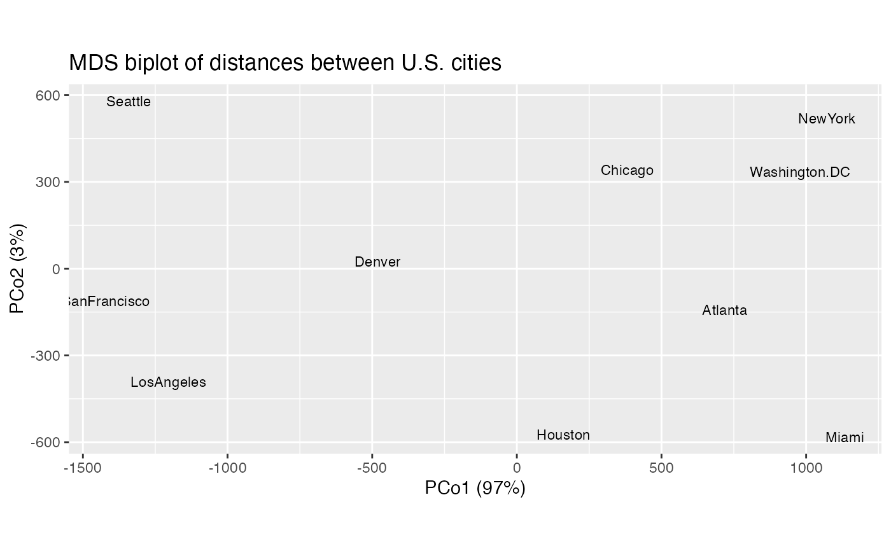

methods-cmds.RdThese methods extract data from, and attribute new data to,
objects of class "cmds_ord". This is a class introduced in this package
to identify objects returned by cmdscale_ord(), which wraps
stats::cmdscale().
# S3 method for cmds_ord
as_tbl_ord(x)
# S3 method for cmds_ord
recover_rows(x)
# S3 method for cmds_ord
recover_cols(x)
# S3 method for cmds_ord
recover_inertia(x)
# S3 method for cmds_ord
recover_coord(x)
# S3 method for cmds_ord
recover_conference(x)
# S3 method for cmds_ord
recover_aug_rows(x)
# S3 method for cmds_ord
recover_aug_cols(x)
# S3 method for cmds_ord
recover_aug_coord(x)An ordination object.
Other methods for eigen-decomposition-based techniques:
methods-eigen,
methods-factanal
# 'dist' object (matrix of road distances) of large American cities
class(UScitiesD)
#> [1] "dist"
print(UScitiesD)
#> Atlanta Chicago Denver Houston LosAngeles Miami NewYork
#> Chicago 587
#> Denver 1212 920
#> Houston 701 940 879
#> LosAngeles 1936 1745 831 1374
#> Miami 604 1188 1726 968 2339
#> NewYork 748 713 1631 1420 2451 1092
#> SanFrancisco 2139 1858 949 1645 347 2594 2571
#> Seattle 2182 1737 1021 1891 959 2734 2408
#> Washington.DC 543 597 1494 1220 2300 923 205
#> SanFrancisco Seattle
#> Chicago
#> Denver
#> Houston
#> LosAngeles
#> Miami
#> NewYork
#> SanFrancisco
#> Seattle 678
#> Washington.DC 2442 2329
# use multidimensional scaling to infer artificial planar coordinates
UScitiesD %>%
cmdscale_ord(k = 2) %>%
as_tbl_ord() %>%
print() -> usa_mds
#> # A tbl_ord of class 'cmds_ord': (10 x 2) x (10 x 2)'
#> # 2 coordinates: PCo1 and PCo2
#> #
#> # Rows (symmetric): [ 10 x 2 | 0 ]
#> PCo1 PCo2 |
#> |
#> 1 -719. 143. |
#> 2 -382. -341. |
#> 3 482. -25.3 |
#> 4 -161. 573. |
#> 5 1204. 390. |
#> 6 -1134. 582. |
#> 7 -1072. -519. |
#> 8 1421. 113. |
#> 9 1342. -580. |
#> 10 -980. -335. |
#> #
#> # Columns (symmetric): [ 10 x 2 | 0 ]
#> PCo1 PCo2 |
#> |
#> 1 -719. 143. |
#> 2 -382. -341. |
#> 3 482. -25.3 |
#> 4 -161. 573. |
#> 5 1204. 390. |
#> 6 -1134. 582. |
#> 7 -1072. -519. |
#> 8 1421. 113. |
#> 9 1342. -580. |
#> 10 -980. -335. |
# recover (equivalent) matrices of row and column artificial coordinates
get_rows(usa_mds)
#> PCo1 PCo2
#> [1,] -718.7594 142.99427
#> [2,] -382.0558 -340.83962
#> [3,] 481.6023 -25.28504
#> [4,] -161.4663 572.76991
#> [5,] 1203.7380 390.10029
#> [6,] -1133.5271 581.90731
#> [7,] -1072.2357 -519.02423
#> [8,] 1420.6033 112.58920
#> [9,] 1341.7225 -579.73928
#> [10,] -979.6220 -335.47281
get_cols(usa_mds)
#> PCo1 PCo2
#> [1,] -718.7594 142.99427
#> [2,] -382.0558 -340.83962
#> [3,] 481.6023 -25.28504
#> [4,] -161.4663 572.76991
#> [5,] 1203.7380 390.10029
#> [6,] -1133.5271 581.90731
#> [7,] -1072.2357 -519.02423
#> [8,] 1420.6033 112.58920
#> [9,] 1341.7225 -579.73928
#> [10,] -979.6220 -335.47281
# augment ordination with point names
(usa_mds <- augment_ord(usa_mds))
#> # A tbl_ord of class 'cmds_ord': (10 x 2) x (10 x 2)'
#> # 2 coordinates: PCo1 and PCo2
#> #
#> # Rows (symmetric): [ 10 x 2 | 1 ]
#> PCo1 PCo2 | .name
#> | <chr>
#> 1 -719. 143. | 1 Atlanta
#> 2 -382. -341. | 2 Chicago
#> 3 482. -25.3 | 3 Denver
#> 4 -161. 573. | 4 Houston
#> 5 1204. 390. | 5 LosAngeles
#> 6 -1134. 582. | 6 Miami
#> 7 -1072. -519. | 7 NewYork
#> 8 1421. 113. | 8 SanFrancisco
#> 9 1342. -580. | 9 Seattle
#> 10 -980. -335. | 10 Washington.DC
#> #
#> # Columns (symmetric): [ 10 x 2 | 1 ]
#> PCo1 PCo2 | .name
#> | <chr>
#> 1 -719. 143. | 1 Atlanta
#> 2 -382. -341. | 2 Chicago
#> 3 482. -25.3 | 3 Denver
#> 4 -161. 573. | 4 Houston
#> 5 1204. 390. | 5 LosAngeles
#> 6 -1134. 582. | 6 Miami
#> 7 -1072. -519. | 7 NewYork
#> 8 1421. 113. | 8 SanFrancisco
#> 9 1342. -580. | 9 Seattle
#> 10 -980. -335. | 10 Washington.DC
# reorient biplot to conventional compass
usa_mds %>%
ggbiplot() +
scale_x_reverse() +
scale_y_reverse() +
geom_cols_text(aes(label = .name), size = 3) +
ggtitle("MDS biplot of distances between U.S. cities")
